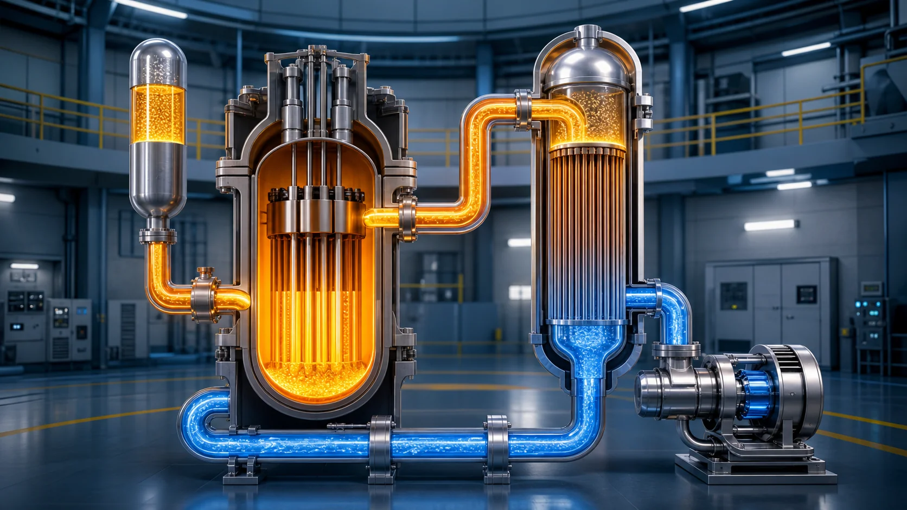
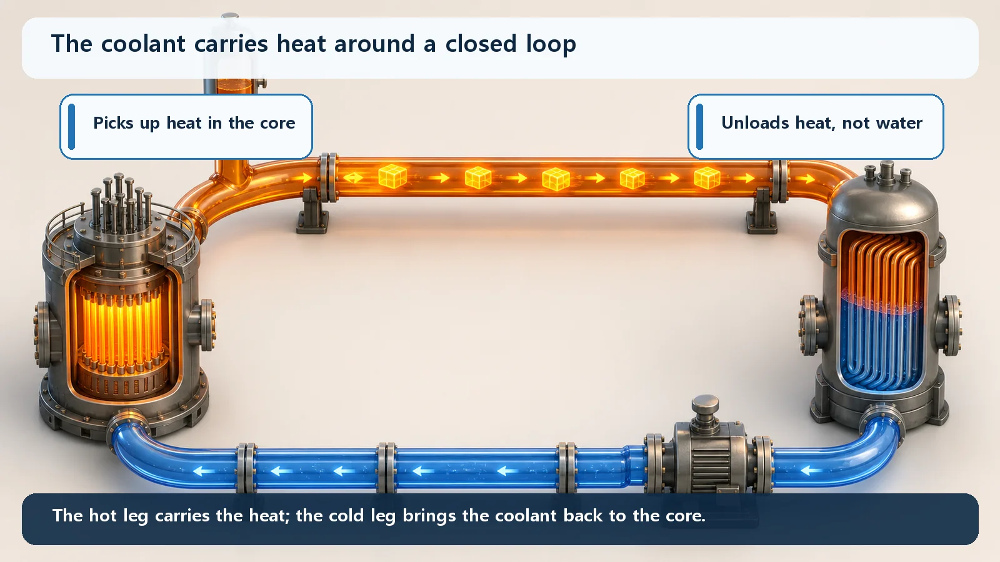
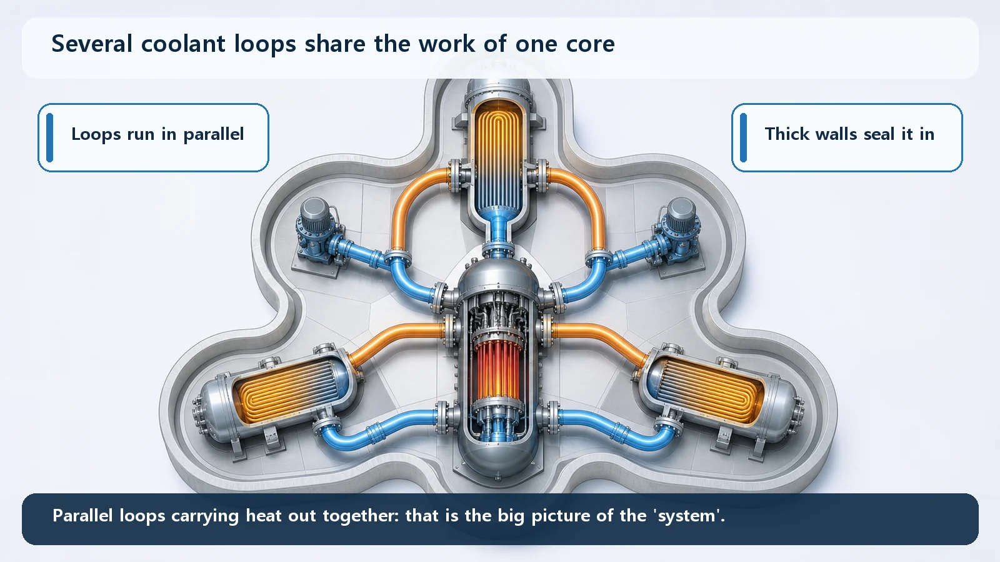

Reactor Types & Plant Systems · 187
A Delivery Route That Never Stops Hauling Heat — The Big Picture of the Reactor Coolant System (RCS)
Like a delivery route that runs all day, the coolant loads heat in the core, drops it off at the steam generator and comes back for more.

The reactor coolant system (RCS) is a hot, high-pressure closed loop that carries the core's heat in the coolant to the steam generators and brings the coolant back to the core. Held at about 150 atmospheres so the water stays liquid, it runs core → hot leg → steam generator → pump → cold leg → core, and its sealed boundary also confines radioactive material.
Earlier we took a reactor's parts apart one by one: the coolant pump that drives the water, the steam generator that quietly takes over the hot water's heat, the pressurizer that holds the pressure steady. But knowing every part still leaves a question: "Connected together, what do they actually do?" Today's big picture is the single system they form: the reactor coolant system, or RCS.
The delivery trucks run the same route all day
Picture a delivery route that loops around town. Trucks load up at the warehouse, drop the cargo at a set dock, then head back empty to load up again, all day long. What matters isn't how good any one truck is, but whether the whole route keeps running without interruption.
That is exactly what the reactor coolant system does. The trucks are the water flowing through the core, the coolant. The cargo is heat. As the coolant passes through the core it takes on a heavy load of the heat made by fission, sets that heat down at a fixed place, and returns to the core to load up again. The name for this whole circulating route, taken as one unit, is the reactor coolant system (RCS). In a pressurized water reactor it is also called the primary system.

Let's ride the route once, slowly
Starting point: the core. As the coolant flows between the fuel rods, it picks up heat and gets hot. That's the fully loaded truck pulling out of the warehouse.
The hot coolant travels through a thick pipe called the hot leg to the steam generator. At the steam generator the coolant sets down the heat it has been carrying. This drop-off is special, though. The coolant flows inside thousands of thin metal tubes in the steam generator, and through the tube walls it hands over only its heat to completely separate water surrounding the tubes (the secondary-system water). The two waters never mix; only the cargo of heat crosses over. Think of two crews passing goods across a counter without entering each other's area.
Having dropped off its load, the now cooler coolant is pushed by the reactor coolant pump through the cold leg back to the core. The cold leg is the empty return leg of the trip. One thing to be clear about: the coolant pump does not make heat. It just pushes heavy water hard enough to keep the route turning, the dispatcher, so to speak. Core → hot leg → steam generator → pump → cold leg → back to the core: the coolant goes round and round this closed loop without end.
Hanging off the route like a side branch is one more device: the pressurizer. It keeps the "road conditions" of the whole route, meaning the system pressure, steady. Its name sounds close to the steam generator's role, but the pressurizer does not make steam for the turbine. It's simply the pressure keeper for the whole route.
Why squeeze it so hard?
A natural question: why keep this route under such high pressure? The water in the reactor coolant system is held at about 150 atmospheres (about 15.5 megapascals), roughly 150 times the ordinary air pressure we live in.
The reason is to keep the water a liquid that doesn't boil. Ordinary water boils at 100°C at 1 atmosphere, but squeeze it this hard and its boiling point jumps to about 345°C. The coolant runs at roughly 290°C in the cold leg and 320–325°C in the hot leg, below the boiling point, so this very hot water doesn't boil away in bulk and stays a calm liquid. Calm liquid carries heat far more steadily and predictably than bubbling water: a smooth road for the trucks.
These thick, tightly sealed, high-pressure pipes also have a hidden second job. Coolant that passes directly through the core can carry radioactive material, and the piping and vessels themselves serve as a barrier that keeps this coolant locked inside the system. The route that carries the heat is also a sturdy wall that keeps what's inside from getting out.

Not one route, but several
One more fact worth knowing for the big picture: a real pressurized water reactor does not have just one of these loops. Depending on the design, it usually has two to four coolant loops side by side around the core, each with its own steam generator and coolant pump. Picture one reactor vessel at the center with several delivery routes circling it at the same time.
Splitting the core's heat across several routes reduces the load on any one and makes the system more flexible to operate and inspect. The core cools properly only when the whole network runs together: that's what "system" means here. Look at the route network, not the individual trucks.
This loop must never stop
Why does this matter so much? A reactor doesn't turn cold the moment you stop the chain reaction. Fission products keep releasing heat for a while, known as decay heat (residual heat). So even after the reactor is shut down, the core's heat still has to be carried somewhere.
The basic route for hauling that cargo out is the reactor coolant system. During normal operation, after the plant is shut down, and in unexpected situations alike, the core's heat must always have a way out. Keeping this loop working under any conditions, with another path ready if it ever falters, is a main thread of reactor safety design. The question is "Is the system still circulating?", not just "Are the parts intact?"
Points people often mix up
First, the reactor coolant system (primary system) and the secondary system behind it are not the same. The RCS is a high-pressure closed loop that runs directly through the core; the secondary system is a separate water path outside the steam generator tubes that makes steam and sends it to the turbine. Primary coolant never flows directly to the turbine. It hands over only its cargo of heat at the steam generator wall and turns back.
Second, "As long as there's water in there, won't the core cool itself?" Not so. Still water doesn't move heat away; the coolant has to actually circulate for heat to reach the steam generator. The system turning together is the heart of cooling.
Today's takeaways
- The reactor coolant system (RCS), or primary system in a PWR, is a hot, high-pressure closed loop that carries the core's heat in light water to the steam generators and back.
- The path runs core → hot leg → steam generator → coolant pump → cold leg → back to the core; the pressurizer, on a side branch, holds the system pressure steady (it does not make steam).
- The system is held at about 150 atmospheres to keep the hot water (roughly 290–325°C) a stable liquid that doesn't boil, and its thick, sealed boundary also serves as a barrier that confines radioactive material.
- There are usually two to four such loops in parallel; the whole network turning together is what "system" means.
- Decay heat remains after the chain reaction stops, so this circulation (or a cooling path that replaces it) must not stop; that is where the big picture connects directly to safety.
Once this network is in view, the plant-system and safety topics ahead come into much sharper focus.